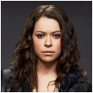
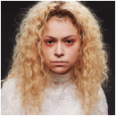

Sarah Manning, une jeune voleuse d'une vingtaine d'années, orpheline et sans le sou , assiste au suicide du détective Beth Childs, qui lui ressemble trait pour trait. Elle décide d'endosser son identité lorsqu'elle apprend que Beth possédait un compte épargne, tout en effaçant sa propre existence en faisant croire qu'elle s'est ôtée la vie. Grâce aux enquêtes de Beth, Sarah apprend qu'elles ne sont pas jumelles mais clones, et qu'il en existe un certain nombre en Amérique du Nord et en Europe. Elle fait la connaissance d'autres clones en les personnes de Cosima Niehaus, une scientifique spécialisée dans la génétique, et d'Alison Hendrix, une mère au foyer vivant dans une banlieue confortable, qu'elle assiste pour en apprendre plus sur les clones. Elle est également pourchassée par Helena, un autre clone psychopathe et manipulée pour qu'elle élimine les clones.
|  | Sarah Manning |
Née au Royaume-Uni, Sarah et son frère adoptif Félix sont été emmenés en Amérique du Nord par leur mère adoptive, Siobhan Sadler, surnommée "Mme S.". .Au début de la série, Sarah prend l'identité de Beth Childs, qui lui ressemble comme deux gouttes d’eau, après avoir été témoin de sa mort. À l'origine, elle voulait voler les économies de Beth, mais elle s’embarque dans un complot de clonage humain illégal. |
| Alison Hendrix |
Alison est une mère de famille monomaniaque, résidant en petite banlieue avec son mari Donnie et leurs deux enfants adoptés, Oscar et Gemma. Elle vit très mal la découverte de sa nature de clone et noie ses mensonges dans l'alcool. Le dernier épisode de la saison 1 révèle que son époux est également son contrôleur. | |
| Cosima Niehaus |
Originaire de San Francisco, Cosima est étudiante en microbiologie et en biologie évolutive du développement. Elle centralise toute l'enquête sur les clones. Son chemin croise celui de Delphine Cormier, étudiante française. Elles tombent amoureuses. Mais très vite, Cosima découvre que leur rencontre n'était qu'une supercherie visant à introduire Delphine dans sa vie afin de l'espionner (contrôleur). | |
|  | Helena | Helena est la jumelle miroir de Sarah (elle a le cœur à droite), mais elle a été récupérée et élevée par une secte religieuse en Ukraine qui a fait d'elle une tueuse psychopathe et la lance à la poursuite des autres clones, qu'elle traque et exécute. Sa rencontre avec Sarah l’apaise et lui fait rencontrer les autres clones. Un lien très particulier les unit, elles se protègent et s'aiment à leurs façon. |